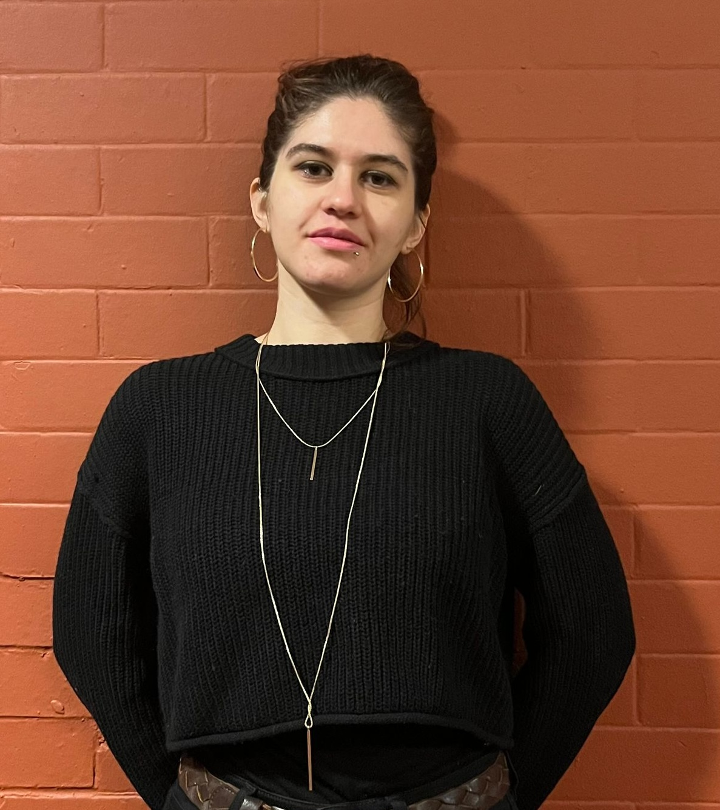
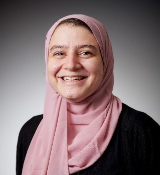
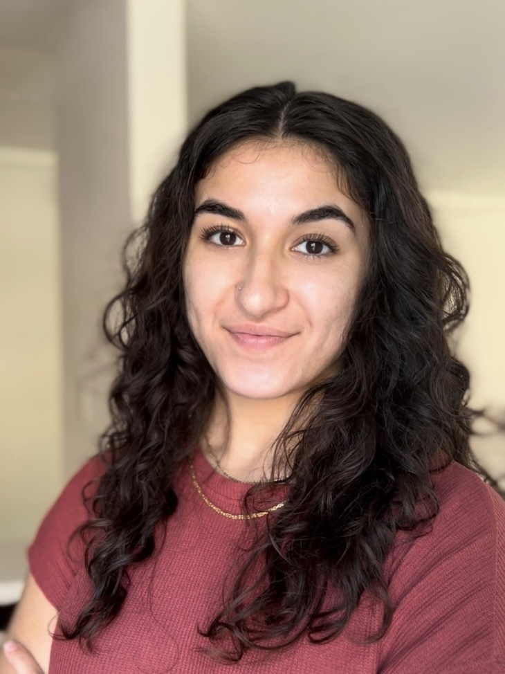

Members
Meet the members involved in SWANA Pop
Organizers
SWANA Pop is organized by scholars committed to building community, supporting population research, and creating space for scholarly exchange related to the SWANA region and its diaspora.

Sinem Esengen
Sociology, Ohio State University
Sinem is a Ph.D. Candidate in the Department of Sociology at Ohio State University (OSU) and a graduate student affiliate of the Institute of Population Research (IPR). Previously, she received her undergraduate degree in Economics and Business Economics (with a specialization in Emerging Markets) from Maastricht University, and her MSc in Gender and Women’s Studies from Middle East Technical University (METU).
Her research is situated at the intersection of the sociology of reproduction, demography (primarily fertility and migration), the sociology of the body and embodiment, and feminist studies. She uses both quantitative and qualitative methods, whichever the question and available data necessitate.

Georgina Lily Gemayel
Geography and Environment, University of North Carolina at Chapel Hill
Georgina is a PhD candidate in the Department of Geography and Environment at the University of North Carolina at Chapel Hill, an NSF Graduate Research Fellow, and a trainee in the Biosocial Predoctoral Training Program at the Carolina Population Center. She is a human-environment geographer whose research examines the intersections of climate change, nutrition, and gender in the SWANA region.
Using mixed methods, including large-scale climate and health survey data and feminist qualitative approaches, her work connects population-level health outcomes with the everyday lived experiences of women under climate stress. She founded the SWANA Population Working Group.
Katharina Klaunig
Sociology, University of North Carolina at Chapel Hill
Katharina is a PhD student in the Department of Sociology at the University of North Carolina at Chapel Hill and a predoctoral trainee at the Carolina Population Center. She received her undergraduate degree at New York University in Abu Dhabi in Social Research and Public Policy. Her research interests include migration and mobility dynamics, migration trajectories, labor markets, and the role of employers in managing migration.
Alfredo Rojas
Biobehavioral Health, Pennsylvania State University
Alfredo is a postdoctoral scholar at Pennsylvania State University in the Water, Health, and Nutrition Lab. His research examines how climate change influences human health outcomes. He previously trained at the Carolina Population Center and earned his PhD in Anthropology from UNC-Chapel Hill, where his research focused on agricultural change and household labor in the Ivory Coast.

Sarah Wahby
Public Affairs, University of Minnesota
Sarah Wahby is a PhD candidate in Public Affairs at the University of Minnesota. Her research focuses on institutions, natural resources, conflict, and migration in the SWANA region. She is affiliated with the Minnesota Population Center and the Economic Research Forum and previously helped establish the J-PAL MENA office in Egypt.
Members
SWANA Pop members include scholars across institutions, disciplines, and career stages whose work or interests connect them to the SWANA region and its diaspora.
Jasmine Abdel Ghany
Sociology, Nuffield College, University of Oxford
Jasmin Abdel Ghany is a Nuffield Postdoctoral Prize Research Fellow in Sociology. Her work sits at the intersection of demography and sociology, focusing on early-life environmental exposures and their long-term effects on health and inequality. Her doctoral research examined in-utero exposure to extreme heat and its impacts on maternal and infant health. She is broadly interested in environmental inequalities and their implications for social stratification.

Abhishek Bhatia
Carolina Health Informatics Program (CHIP), University of North Carolina at Chapel Hill
Abhishek (Abhi) Bhatia is a PhD Candidate in Health Informatics at the University of North Carolina at Chapel Hill. His research integrates disparate data sources to estimate the effects of environmental and climate exposures on individual morbidity and mortality, applying statistical learning, causal inference, spatiotemporal analysis, and computational demography to large-scale observational data. He is also interested in human rights, data privacy, and ethics.
Externally, Abhi serves as a Research Scientist at CrisisReady at Harvard University and Direct Relief, combining clinical data, field survey data, and novel mobility data for equitable crisis response in the context of the Syrian War, floods in India, and broader emergency preparedness.

Leila Moustafa
Sociology & Center for Demography and Ecology, University of Wisconsin-Madison
Leila Moustafa is a PhD Student in the Department of Sociology and Center for Demography and Ecology at the University of Wisconsin-Madison. Her research centers on the Middle Eastern and North African (MENA) population in the United States. She is interested in identity, race, and ethnicity, and examines the implications of updated federal guidelines for collecting race and ethnicity data and their effects on demographic outcomes.
Faculty Mentors
Faculty mentors support the SWANA Population Working Group by offering guidance, feedback, and mentorship to junior scholars.
Goleen Samari
Population and Public Health Sciences, University of Southern California
Goleen Samari is an Associate Professor and population health demographer in the Department of Population and Public Health Sciences at the University of Southern California. Dr. Samari’s research focuses on structural determinants of reproductive and population health. Her research considers how structural inequities like racism, gender inequities, and migration-based inequities shape population health with a particular focus on immigrant communities and populations in or from the Middle East and North Africa. She also works on measuring structural racism, xenophobia, and sexism through policy approaches.